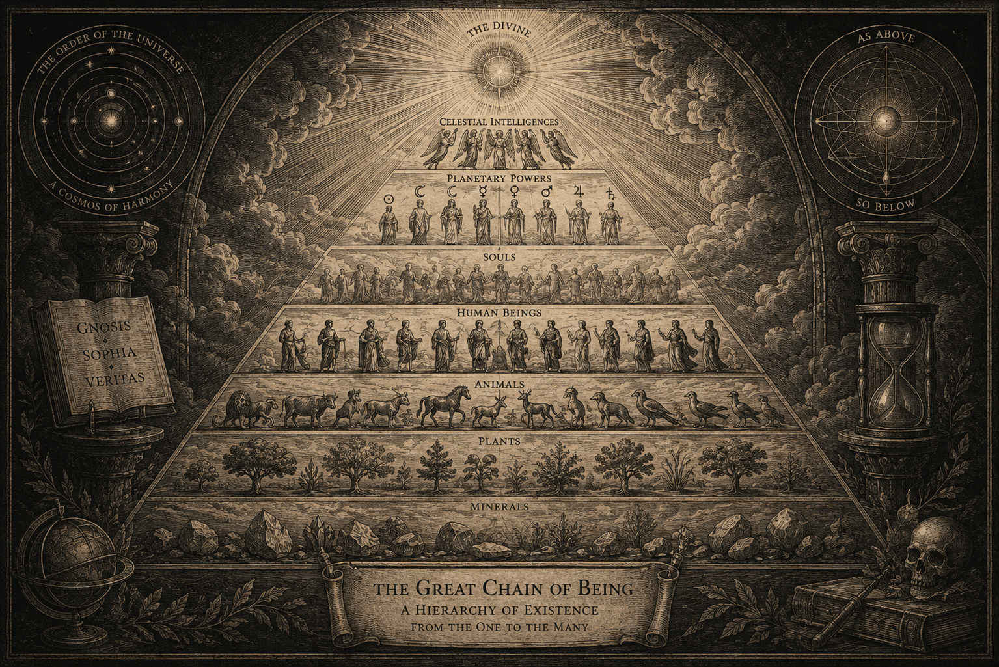

The Great Chain of Being · Nocturna Archive
A universe arranged
in degrees of being.
From Plato to Leibniz, the idea that the universe forms a perfect hierarchy of beings has shaped Western thought for centuries.
Somewhere between matter and divinity lies the question that has accompanied philosophy since antiquity: where exactly does humanity belong?
The medieval imagination inherited an ordered cosmos. Stones, plants, animals, human beings, celestial intelligences and God were imagined not as isolated categories, but as links within a continuous structure of existence.
“The universe is a hierarchy of forms, each revealing something of the whole.”
The image of the chain became particularly powerful because it transformed an abstract philosophical proposition into something almost architectural. Every being occupied a place. Every place implied a relation.
Yet the hierarchy also contained a disturbing implication: to know one's place within the cosmos was simultaneously to accept its limits.
The Question of the Human Place
Humanity occupied an ambiguous position. Neither entirely material nor entirely divine, the human being stood between worlds.
Perhaps this is what made the Great Chain so enduring. It offered not merely a map of reality, but an answer to an ancient anxiety: what are we doing here?